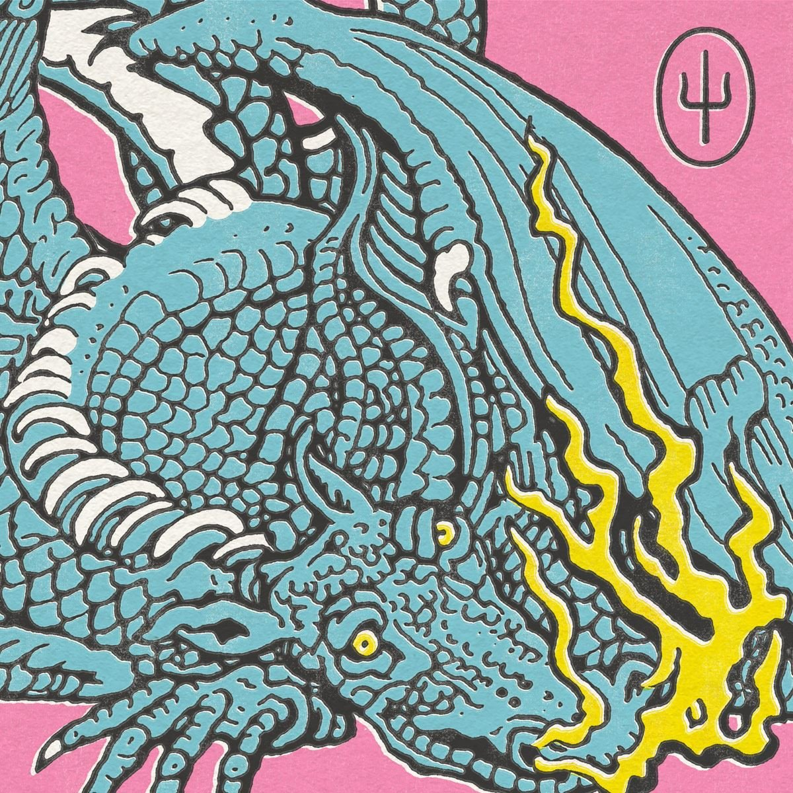

Twenty One Pilots es un dúo musical originario de Columbus, Ohio, formado por Tyler Joseph y Josh Dun. Su estilo musical es difícil de encasillar en un solo género, ya que mezclan elementos de pop, rock, hip-hop, indie y electrónica. La banda se formó en 2009 y desde entonces ha ganado una gran base de fans y reconocimiento internacional. Algunos de sus álbumes más conocidos incluyen "Blurryface" (2015) y "Trench" (2018), los cuales han recibido elogios de la crítica y éxito comercial. Han ganado varios premios, incluidos varios premios Grammy. Además de su música, Twenty One Pilots es conocido por sus presentaciones en vivo llenas de energía y su estética visual única, que a menudo incluye símbolos y temas recurrentes en sus letras y videos musicales.
Algunas portadas de sus canciones